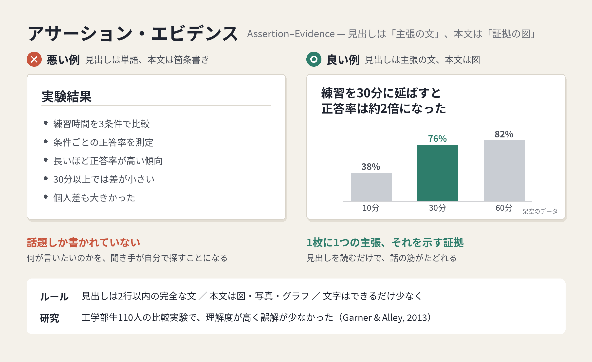

第5回
アサーション・エビデンス
Assertion–Evidence Approach

どういう知識か
ペンシルベニア州立大学のマイケル・アリーが広めているスライドの作り方です。PowerPointの初期設定どおりの「短い単語の見出し＋箇条書き」をやめて、見出しにはそのスライドで言いたいことを完全な文で書き（2行以内）、本文にはそれを裏づける図・写真・グラフを置き、文字はできるだけ少なくします。
Garner と Alley（2013）は、工学部の学生110人に同じ内容の講義を、箇条書き中心のスライドか、アサーション・エビデンス型のスライドで見てもらい比べました。アサーション・エビデンス型のほうが理解度が高く、誤解が少なく、感じる認知負荷も低く、時間をおいたテストでの記憶も良好でした。この実験では、1枚あたりの語数は箇条書き版が平均41.5語、アサーション・エビデンス版が21.2語でした。
具体例
悪い例：見出しは「実験結果」だけ。その下に「練習時間を3条件で比較」「長いほど正答率が高い傾向」…と箇条書きが5行並びます。何が言いたいのかは、聞き手が自分で探さないといけません。
良い例：見出しを「練習を30分に延ばすと正答率は約2倍になった」という1つの文にして、その下には3本の棒グラフだけを置きます。言いたい30分の棒にだけ色をつけます。見出しを読めば主張がわかり、図を見ればその根拠がわかります。
今日から使えるひとこと
次の発表スライドで、見出しを1枚ずつ「〜は〜だった」という文に書きかえてみてください。見出しだけを順に読み上げて話の筋が通れば、構成はうまくいっています。文にできないスライドは、言いたいことがまだ決まっていないサインです。本文の箇条書きは口で話すことにして、画面には図を1つ大きく置きましょう。
出典
- How the Design of Presentation Slides Affects Audience Comprehension: A Case for the Assertion–Evidence Approach https://www.ijee.ie/articles/Vol29-6/23_ijee2791ns.pdf
- Presenting as an Engineer or Scientist（アサーション・エビデンスの解説動画とテンプレート） https://writing.engr.psu.edu/speaking.html